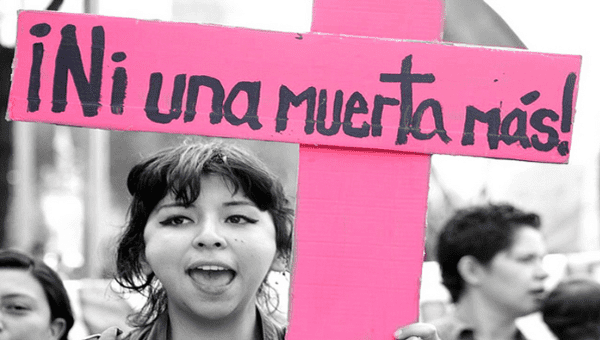

El feminicidio o femicidio se define como el «asesinato de una mujer a manos de un hombre por machismo o misoginia».1 El concepto define un acto de máxima gravedad, en un contexto cultural e institucional de discriminación y violencia de género,2 que suele ser acompañado por un conjunto de acciones de extrema violencia y contenido deshumanizante, como torturas, mutilaciones, quemaduras, ensañamiento y violencia sexual, contra las mujeres y niñas. Diana Russell, promotora inicial del concepto, explicó que «el feminicidio representa el extremo de un continuum de terror antifemenino que incluye una amplia variedad de abusos verbales como físicos, tales como violación, tortura, esclavitud sexual (particularmente por prostitución), abuso sexual infantil incestuoso o extrafamiliar, golpizas físicas y emocionales, entre otras».34 Varios países lo han incluido como delito en sus legislaciones penales, con variaciones en el tipo penal. La palabra fue incluida en el Diccionario de la lengua española en 2014
El termino femicide registra esporadicos antecedentes de uso en el idioma ingles desde comienzos del siglo xix,pero comenzo a difundirse desde que Diana Russell lo utilizara en 1976 ante el Tribunal Internacional de los Crimenes contra la Mujer, y sobre todo desde que instalara el concepto con sendas publicaciones realizadas en 1990 y 1992.La introduccion al idioma español se produjo a por Russell y en el marco de las revelaciones sobre impunidad en los asesinatos de mujeres de Ciudad Juarez en Mexico, para poder expresar la gravedad de una conducta generalizada en la sociedad contemporanea, para la que no habia una palabra en especial.
La definicion mas comun de feminicidio es aquella que lo conceptualiza como el asesinato de una mujer por razones de genero (Russell, 2008), siendo que en la actualidad cada 10 minutos es asesinada a una mujer por motivos de genero. El Plan Nacional contra la Violencia Hacia la Mujer 2009-2015 lo definio como los homicidios de mujeres en condiciones de discriminacion y violencia basados en el genero.[cita requerida] Como definicion general, la precision y adaptacion del feminicidio a contextos culturales y sociales es mas discutida. Mientras que algunas autoras han optado por definir el feminicidio como la consecuencia de estructuras de poder en un sistema patriarcal (Bersani & Chen, 1988) otras lo han definido como una modalidad de poder propia de ex colonias que interactua con los sistemas socio-legales formales e informales y da forma a una economia de la muerte en la que operan distintos actores como la iglesia, policias, jueces y otros actores encargados del control social (Shalhoub-Kervorkian & Daher-Nashif, 2013).vdgterwr.
El feminicidio o femicidio define un acto de violencia extrema contra las mujeres por razones machistas o misoginas, es una de las violaciones de los derechos humanos mas graves, extendida, arraigada y tolerada en el mundo.Forma parte del concepto mas amplio de violencia de genero. Los cientificos sociales y las normas nacionales e internacionales tienen considerables diferencias tanto en la definicion sociologica, como en la definicion juridica del termino, diferencias que se extienden a los conceptos vinculados de genero y violencia de genero. Es la forma extrema de violencia de genero, causado por odio o desprecio a su condicion de mujer, que degenera en su muerte producidas tanto en el ambito publico como privado. (Articulo 15, Numeral 20, Ley Organica sobre el Derecho de las Mujeres a una Vida Libre de Violencia).33 El problema de definicion del concepto se agrava por la dualidad feminicidio/femicidio, que en algunos casos se consideran sinonimos y en otros casos definen diferentes actos y situaciones sociales.
